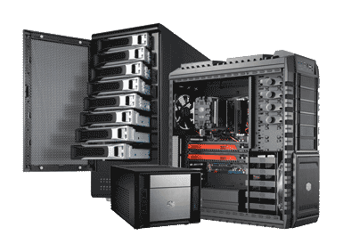
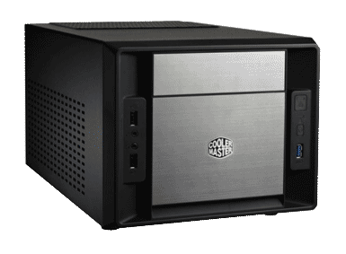
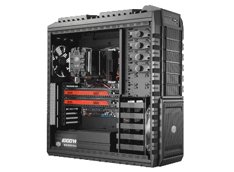
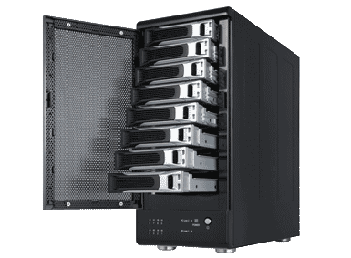

 If you are building a computer yourself the case is one of the first things you are going to select and your decisions of your other components are going to be influenced by that choice.
What do you want in a computer case?
How much do you ultimately want to spend on this new computer?
Is the look of the case important or do you just want the cheapest computer case that will work for your needs?
What is this PC going to be used for?
Who will it be used by?
All of these questions are things you should be asking yourself as you are preparing to choose your new computer case.
If this is going to be a no frills workhorse PC that is built for power and not aesthetics then you don't need to worry about whether or not it will look nice because it will just be tucked away somewhere doing its thing unseen.
In this situation you could probably get a cheap case for between 30 and 50 dollars that will serve your needs providing you don't care how it looks.
If this new PC will be a higher end system that will act as a home server, a gaming PC or a media player these are more specific situations and require more specific solutions and for that reason you should be very careful to choose the correct case for your situation.
 So you want to build a media center PC?
In order to really decide what case you should buy for your project you should first determine a couple things about your situation.
Do you plan to stream content via a service such as Netflix or Amazon Prime or will your content be recorded and stored locally?
If you are going to store content locally will it be stored on this device or will you have another computer on your network to handle that task?
Do you want this media center PC to be visible in your room and accessible or hidden away out of sight?
Will this just be for playing movies and Tv or will you also be using this system to play games?
These questions will help you to determine what type of media center case to purchase.
If you do not need a lot of storage space in this situation you can choose a much smaller computer case.
If you do need storage space you will need a larger case to accommodate an additional hard drive or two.
If you plan to use it to play games it will need to be a larger case to accommodate more cooling so your computer isn't over heating and possibly a large video card or two.
It also may require more power to accommodate the power needs of your additional cooling and your video cards.
This means increasing the size of your power supply and thus the size of your case will need to increase in size to make room for the larger power supply.
 Need a new desktop PC?
There are a near infinite number of options for desktop cases.
So how do we make sense of all our choices?
We ask ourselves some questions about what we need and what we want.
The first question should probably be whether or not we are going to have this case out in the open where it will need to look nice or if we are going to hide this PC away and the cases looks wont matter?
If this is a purely functional PC and you do not care what it looks like then you can get a cheap case for your build in the sub 50 dollars range.
However if you want it to look more presentable to show off to friends and family then you will want to choose a case more carefully and it will more than likely be anywhere above 50 dollars.
Computer cases can sell for hundreds of dollars and the first time builder may be tempted to purchase a really expensive case because a higher price must mean it is a better computer case right?
The answer is yes and no.
Is it a better computer case because it costs more money?
Usually that is correct but if you make that purchase of the super high end computer case you will most certainly be paying for numerous features which you will never use and those feature are the primary reason that a high end PC case has such a high end price tag.
I recommend you do your research and purchase a case that best fits your needs in form factor, function and aesthetics.
If you decide what your needs are in those three key areas you can get exactly what you need and you will not pay for features you don't need and never will.
This can save you hundreds of dollars that you could have otherwise spent by giving in to the impulse buy that looks really nice and costs a lot but has way more function than you will be taking advantage of so it is an important step unless you don't care about wasting your hard earned dollars.
 Servers are awesome!
It is just that simple.
Once you have your own home server you will wonder how you ever lived without it.
I have made many computer builds over the years totaling thousands and thousands of dollars on parts.
Of those computers I have built my servers are the ones that have required the least maintenance, replaced parts and upgrades.
If you build a server and you do it correctly it should out last all of your other PCs in your house by many years.
It is just a workhorse serving files to the other PCs on the network and no one seems to really think about where those files are coming from.
The entire internet is built upon workhorse PCs just like a home server the only difference being they are perhaps a bit larger and more powerful than what you might have in your home.
So your asking yourself "why build a server PC for my home I already have two or three other PCs?"
There are many answers to the question of why you would want or need a server but here are a couple.
Do you want whole home DVR capabilities so that any room in the house can record live TV?
A home server can do that if its done properly.
"But I have a cable box for that."
Yes and your paying a monthly fee on that cable box.
Is a whole home DVR server easy to setup?
No, it takes a lot of effort and research to make that all work correctly but if you are careful in your research and purchase all the right parts and install all the right software and it is all configured properly then you have a DVR server with recording and play back function form any room in the house with a near infinite
amount of storage space.
Sounds great right?
But you aren't willing to devote the time an efforts to get that all setup just right so what else can a home server do?
It can store backups of your files, photos, home movies, music, documents and a lot more.
All of which can be accessed by any computer in the house and if you take the time to setup proper security you can even access those files from anywhere in the world where you have internet access.
Is a home server necessary for everyone?
No, it is more for the PC enthusiasts or people run a business from home.